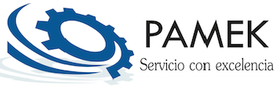

Tecnología avanzada y servicios especializados para optimizar cada hectárea de tu campo. Aumenta rendimientos, reduce costos y toma decisiones basadas en datos.
Transformamos los desafíos del campo en oportunidades de crecimiento con tecnología de precisión
Reducimos el desperdicio de insumos mediante aplicación variable de fertilizantes, pesticidas y agua, ahorrando hasta 30% en costos operativos.
Automatización de procesos y monitoreo en tiempo real para optimizar cada operación en el campo y aumentar la productividad.
Tecnología GPS y sensores avanzados para aplicaciones exactas donde y cuando se necesitan, eliminando zonas sobre o sub-aplicadas.
Análisis predictivo y mapas de rendimiento para tomar decisiones informadas que maximicen la rentabilidad de cada lote.
Identificación temprana de problemas y gestión proactiva para aumentar rendimientos por hectárea hasta un 25%.
Vigilancia 24/7 de tus cultivos mediante imágenes satelitales y drones, detectando problemas antes de que se propaguen.
Soluciones integrales de agricultura de precisión adaptadas a las necesidades de tu operación
Caracterización detallada de la variabilidad del suelo en tu campo.
Aplicación diferenciada de insumos según las necesidades específicas de cada zona.
Vigilancia aérea de alta resolución para detección temprana de problemas.
Optimización del uso del agua con sistemas de riego inteligente.
Software integral para administrar toda tu operación agrícola.
Entrenamiento técnico y acompañamiento continuo para tu equipo.
Casos de éxito y participación en los principales eventos del sector agrícola
Sistema completo de agricultura de precisión en 2,500 hectáreas, logrando 28% de aumento en rendimiento y 35% de reducción en costos de fertilización.
Mapeo de suelos, siembra variable y monitoreo con drones en 1,800 hectáreas. Incremento del 32% en productividad por hectárea.
Monitoreo multiespectral y gestión de plagas en 450 hectáreas de café, mejorando calidad del grano y reduciendo aplicaciones químicas en 40%.
Participación como expositores con demostraciones en vivo de tecnología de drones y sistemas de guiado. Más de 500 visitantes en nuestro stand.
Implementación de riego de precisión y fertilización variable en 3,200 hectáreas, ahorrando 2.5 millones de litros de agua mensualmente.
Serie de capacitaciones en línea sobre agricultura de precisión con más de 1,200 participantes de toda Centroamérica.
Conoce cómo transformamos el campo con agricultura de precisión
Trabajamos con las mejores marcas globales en tecnología agrícola
Testimonios reales de productores que han transformado su operación
Desde que implementamos agricultura de precisión con PAMEK, hemos aumentado nuestros rendimientos en 30% y reducido costos significativamente. El retorno de inversión fue en menos de dos cosechas.
El soporte técnico es excepcional. El equipo de PAMEK nos acompañó en todo el proceso y la capacitación fue clave para que nuestro personal pudiera operar la tecnología sin problemas.
Los mapas de rendimiento nos permitieron identificar zonas problemáticas que antes no veíamos. Ahora tomamos decisiones basadas en datos reales y hemos mejorado la uniformidad de nuestros cultivos.
Estamos listos para ayudarte a transformar tu operación agrícola
Zona 10, Ciudad de Guatemala
Guatemala, C.A.
+502 5117-4129
+502 9876-5432
info@pamek.com.gt
ventas@pamek.com.gt
Lunes a Viernes: 8:00 AM - 6:00 PM
Sábados: 8:00 AM - 12:00 PM